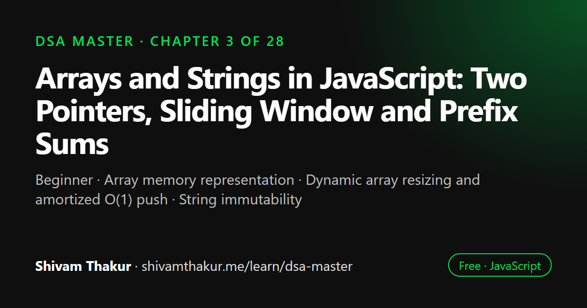

Chapter 3 of 28 · Beginner
Arrays and Strings in JavaScript: Two Pointers, Sliding Window and Prefix Sums
Arrays & Strings — Memory, Patterns, and the Workhorses of DSA

Arrays store elements in contiguous memory, which gives O(1) access by index, while JavaScript strings are immutable sequences of characters. This chapter explains how dynamic arrays grow, the true cost of every array operation, and the four patterns that solve most array and string problems: two pointers, sliding window, prefix sums and difference arrays.
In this chapter you will learn
- Array memory representation
- Dynamic array resizing and amortized O(1) push
- String immutability
- Two pointers and sliding window
- Prefix sums and difference arrays
3.0 Why Arrays Come First
Every data structure we'll build for the rest of this book — stacks, queues, hash tables, heaps, even trees and graphs in their array-based representations — is, underneath, built out of arrays. If recursion (Chapter 2) is the mental technique running underneath everything, the array is the physical foundation running underneath everything. You cannot deeply understand any later structure without first deeply understanding what an array actually is in memory, not just how to call .push() on it.
Strings ride along in this chapter because, in nearly every practical sense, a string is "an array of characters with extra rules" — and the patterns we build here (Two Pointers, Sliding Window, Prefix Sums) apply identically to both.
3.1 What Is an Array, Really? (Memory Representation)
ASCII Visualization: Contiguous Memory
Array: [10, 20, 30, 40]
Memory addresses (assume 4 bytes per slot, starting at 1000):
Address: 1000 1004 1008 1012
+------+------+------+------+
Value: | 10 | 20 | 30 | 40 |
+------+------+------+------+
Index: 0 1 2 3
To access arr[2]: address = 1000 + (2 * 4) = 1008 -> read value 30. O(1).3.2 How Dynamic Arrays Actually Grow (The Resize Mechanism)
Since JavaScript's Array grows dynamically, it's worth understanding how — because this explains a subtle but important complexity nuance you'll be asked about in interviews: amortized complexity.
Intuition: Doubling Strategy
Most dynamic array implementations (across virtually all languages, and conceptually true of JS engines too) use a doubling strategy when they run out of room:
- Start with some small initial capacity (say, 4 slots).
- When you try to add a 5th element and there's no room, allocate a new, larger block (commonly double the size — 8 slots).
- Copy all existing elements into the new block. This copy is O(n).
- Add the new element.
- The old block is discarded (garbage collected).
ASCII Visualization: Growth by Doubling
Capacity: 4 [10][20][30][40] <- full!
Push 50 -> need to grow:
Step 1: allocate new block of capacity 8
[ ][ ][ ][ ][ ][ ][ ][ ]
Step 2: copy old elements (O(n) cost, this ONE time)
[10][20][30][40][ ][ ][ ][ ]
Step 3: add new element
[10][20][30][40][50][ ][ ][ ]
Capacity is now 8. Next 3 pushes are cheap (O(1) each) until full again.3.3 Core Array Operations and Their True Complexity
Let's build a comprehensive, honest complexity table — expanding significantly on the preview from Chapter 1 — with the why for each entry.
| Operation | Complexity | Why |
|---|---|---|
arr[i] (read) |
O(1) | Direct address calculation |
arr[i] = x (write) |
O(1) | Direct address calculation |
arr.push(x) |
O(1) amortized | Occasional resize copy, averaged out |
arr.pop() |
O(1) | Removes from the end, no shifting needed |
arr.unshift(x) |
O(n) | Every existing element must shift right by one index |
arr.shift() |
O(n) | Every remaining element must shift left by one index |
arr.splice(i, 0, x) (insert at i) |
O(n) | Elements after i must shift right |
arr.splice(i, 1) (remove at i) |
O(n) | Elements after i must shift left |
arr.slice() |
O(n) | Must copy all selected elements |
arr.concat() |
O(n + m) | Must copy both arrays' elements |
arr.indexOf(x) / .includes(x) |
O(n) | Must scan until found or end |
arr.sort() |
O(n log n) | Comparison-based sort (TimSort variant in V8) |
arr.reverse() |
O(n) | Must touch every element (in-place swap) |
arr.forEach/map/filter/reduce |
O(n) | One full pass |
Dry Run: Why splice in the Middle Is Expensive
const arr = [1, 2, 3, 4, 5];
arr.splice(2, 1); // remove element at index 2 (the value 3)
console.log(arr); // [1, 2, 4, 5]Before: [1][2][3][4][5]
^ remove index 2
After removing 3, everything after it must shift LEFT by one slot
to close the gap:
[1][2][ ][4][5] <- gap left behind
[1][2][4][5][ ] <- 4 shifts left
[1][2][4][5] <- length shrinks by 1
This shifting is O(n) in the worst case (removing near the front).3.4 Strings in JavaScript: Immutability and Its Consequences
We touched on string immutability in Chapters 1 and 2. Let's now go deep, because it drives nearly every string algorithm decision you'll make.
3.4.1 Definition and Core Fact
Definition: A JavaScript string is an immutable sequence of UTF-16 code units. Once created, a string's contents can never be changed — every "modification" actually creates an entirely new string.
let str = 'hello';
str[0] = 'H'; // silently does nothing! (fails silently, no error, in non-strict evaluation contexts)
console.log(str); // still 'hello'
str = 'H' + str.slice(1); // this is how you actually "modify" a string: build a NEW one
console.log(str); // 'Hello'3.4.2 Converting Between Strings and Arrays
Because strings are immutable but arrays are mutable, nearly every "in-place" string algorithm in this book follows this three-step recipe:
function stringAlgorithmTemplate(str) {
const chars = str.split(''); // Step 1: O(n) — convert to mutable array
// ... do in-place work on `chars`, using swaps, pointers, etc. (O(1) space beyond this array)
return chars.join(''); // Step 3: O(n) — convert back to a string
}3.5 The Two Pointers Pattern
This is our first true "named pattern" — the kind of reusable technique that, once recognized, turns a seemingly hard problem into a mechanical exercise. Expect an entire ecosystem of interview problems to bend to this one idea.
3.5.1 Definition and Intuition
Definition: The Two Pointers technique uses two index variables that traverse a data structure (usually an array or string) — often moving toward each other, or one faster than the other — to solve a problem in a single pass, avoiding nested loops.
Real-Life Analogy: Two People Searching a Bookshelf
Imagine a single, very long shelf of books sorted alphabetically, and you and a friend need to find two books whose combined page count matches a target number. Instead of you individually checking every possible pair (an O(n²) approach — "for every book I look at, check every other book"), you and your friend station yourselves at opposite ends of the shelf. You look at the book at your end; your friend looks at the book at theirs. If the combined page count is too high, your friend (at the high end) steps one book inward. If it's too low, you (at the low end) step one book inward. You keep adjusting, always moving inward, until you find the match or you meet in the middle. You never re-check a pair you've already ruled out — a single O(n) pass solves it.
ASCII Visualization
Sorted array: [2, 7, 11, 15, 18, 24], target sum = 26
left right
v v
[2, 7, 11, 15, 18, 24] 2 + 24 = 26? No, 26... wait let's check: 2+24=26 ✓ actually matches!
Let's use a clearer example, target = 20:
left right
v v
[2, 7, 11, 15, 18, 24] 2 + 24 = 26 -> too high, move RIGHT pointer inward
left right
v v
[2, 7, 11, 15, 18, 24] 2 + 18 = 20 -> MATCH! return [2, 18]3.5.2 Full Implementation: Two Sum on a Sorted Array
function twoSumSorted(sortedArr, target) {
let left = 0;
let right = sortedArr.length - 1;
while (left < right) {
const sum = sortedArr[left] + sortedArr[right];
if (sum === target) {
return [sortedArr[left], sortedArr[right]]; // found it
} else if (sum < target) {
left++; // sum too small -> need a bigger left value -> move left pointer up
} else {
right--; // sum too big -> need a smaller right value -> move right pointer down
}
}
return null; // no pair found
}
console.log(twoSumSorted([2, 7, 11, 15, 18, 24], 20)); // [2, 18]Dry Run
sortedArr = [2, 7, 11, 15, 18, 24], target = 20
Step 1: left=0(2), right=5(24) -> sum=26 -> too big -> right--
Step 2: left=0(2), right=4(18) -> sum=20 -> MATCH! return [2, 18]- Naive approach (nested loop checking every pair): O(n²) time, O(1) space.
- Two Pointers approach: O(n) time (each pointer moves at most
ntotal steps combined), O(1) space.
3.5.3 Second Example: Palindrome Check via Converging Pointers
function isPalindrome(str) {
const chars = Array.from(str.toLowerCase().replace(/[^a-z0-9]/gi, ''));
let left = 0;
let right = chars.length - 1;
while (left < right) {
if (chars[left] !== chars[right]) {
return false;
}
left++;
right--;
}
return true;
}
console.log(isPalindrome('A man, a plan, a canal: Panama')); // true
console.log(isPalindrome('hello')); // false- Time: O(n) — each character is visited at most once across both pointers combined.
- Space: O(n) — for the cleaned character array (unavoidable here since we need a mutable, filtered copy; the pointer logic itself is O(1) extra beyond that array).
3.5.4 Third Example: Same-Direction Pointers — Remove Duplicates From Sorted Array In-Place
A very common interview question, and a great illustration of the "same-direction" flavor of two pointers.
function removeDuplicates(sortedArr) {
if (sortedArr.length === 0) return 0;
let slow = 0; // points to the last confirmed-unique element
for (let fast = 1; fast < sortedArr.length; fast++) {
if (sortedArr[fast] !== sortedArr[slow]) {
slow++;
sortedArr[slow] = sortedArr[fast]; // overwrite in place
}
}
return slow + 1; // the new "logical length" of unique elements
}
const arr = [1, 1, 2, 2, 2, 3, 4, 4];
const newLength = removeDuplicates(arr);
console.log(newLength, arr.slice(0, newLength)); // 4 [1, 2, 3, 4]Dry run:
arr = [1, 1, 2, 2, 2, 3, 4, 4]
slow=0
fast=1: arr[1]=1 === arr[0]=1 -> same, do nothing
fast=2: arr[2]=2 !== arr[0]=1 -> slow=1, arr[1]=2 -> [1,2,2,2,2,3,4,4]
fast=3: arr[3]=2 === arr[1]=2 -> same, do nothing
fast=4: arr[4]=2 === arr[1]=2 -> same, do nothing
fast=5: arr[5]=3 !== arr[1]=2 -> slow=2, arr[2]=3 -> [1,2,3,2,2,3,4,4]
fast=6: arr[6]=4 !== arr[2]=3 -> slow=3, arr[3]=4 -> [1,2,3,4,2,3,4,4]
fast=7: arr[7]=4 === arr[3]=4 -> same, do nothing
Result: slow+1 = 4 unique elements: [1,2,3,4] (first 4 slots)- Time: O(n), single pass.
- Space: O(1) — modifies the array in place, no new data structure proportional to input.
3.6 The Sliding Window Pattern
3.6.1 Motivating Problem: Naive vs. Better vs. Best
The problem: given an array of numbers, find the maximum sum of any k consecutive elements.
Naive approach:
function maxSumNaive(arr, k) {
let maxSum = -Infinity;
for (let i = 0; i <= arr.length - k; i++) {
let currentSum = 0;
for (let j = i; j < i + k; j++) { // recompute the ENTIRE window sum every time
currentSum += arr[j];
}
maxSum = Math.max(maxSum, currentSum);
}
return maxSum;
}
// Time: O(n * k) — for every starting position, we re-sum k elements from scratchNotice the waste: when we slide from window [i, i+k) to window [i+1, i+1+k), almost the entire window is identical — we've only removed one element (arr[i]) from the left and added one new element (arr[i+k]) on the right. Recomputing the whole sum from scratch throws away nearly all of the previous work.
Optimized Implementation
function maxSumSlidingWindow(arr, k) {
let windowSum = 0;
// Build the very first window (the only "full computation" we ever do)
for (let i = 0; i < k; i++) {
windowSum += arr[i];
}
let maxSum = windowSum;
// Slide the window: remove the element leaving, add the element entering
for (let i = k; i < arr.length; i++) {
windowSum = windowSum - arr[i - k] + arr[i];
maxSum = Math.max(maxSum, windowSum);
}
return maxSum;
}
console.log(maxSumSlidingWindow([2, 1, 5, 1, 3, 2], 3)); // 9 (5+1+3)Dry Run
arr = [2, 1, 5, 1, 3, 2], k = 3
Initial window (indices 0,1,2): windowSum = 2+1+5 = 8 maxSum = 8
Slide to i=3: windowSum = 8 - arr[0](2) + arr[3](1) = 7 maxSum = 8
Slide to i=4: windowSum = 7 - arr[1](1) + arr[4](3) = 9 maxSum = 9
Slide to i=5: windowSum = 9 - arr[2](5) + arr[5](2) = 6 maxSum = 9
Final answer: 9- Naive time: O(n·k).
- Sliding window time: O(n) — every element is added to the running sum exactly once and removed exactly once.
- Space: O(1) for both — this pattern is a beautiful example of getting an asymptotic speedup with zero extra memory cost.
3.6.2 Fixed-Size vs. Variable-Size Windows
The example above is a fixed-size window (always exactly k elements). Many real problems need a variable-size window that grows and shrinks based on a condition. Let's build the canonical example: the longest substring without repeating characters.
function longestUniqueSubstring(str) {
const seen = new Set();
let left = 0;
let maxLength = 0;
for (let right = 0; right < str.length; right++) {
// If the character entering the window is already inside it,
// shrink from the left until the duplicate is gone
while (seen.has(str[right])) {
seen.delete(str[left]);
left++;
}
seen.add(str[right]);
maxLength = Math.max(maxLength, right - left + 1);
}
return maxLength;
}
console.log(longestUniqueSubstring('abcabcbb')); // 3 ("abc")
console.log(longestUniqueSubstring('bbbbb')); // 1 ("b")
console.log(longestUniqueSubstring('pwwkew')); // 3 ("wke")Dry Run for 'abcabcbb'
str = a b c a b c b b
idx 0 1 2 3 4 5 6 7
right=0 ('a'): not in seen -> add 'a'. window=[0,0] len=1 seen={a}
right=1 ('b'): not in seen -> add 'b'. window=[0,1] len=2 seen={a,b}
right=2 ('c'): not in seen -> add 'c'. window=[0,2] len=3 seen={a,b,c} <- maxLength=3
right=3 ('a'): 'a' IS in seen -> shrink:
remove str[left=0]='a' from seen, left=1 seen={b,c}
'a' no longer in seen -> stop shrinking
add 'a'. window=[1,3] len=3 seen={b,c,a}
right=4 ('b'): 'b' IS in seen -> shrink:
remove str[left=1]='b', left=2 seen={c,a}
'b' no longer in seen -> stop
add 'b'. window=[2,4] len=3 seen={c,a,b}
right=5 ('c'): 'c' IS in seen -> shrink:
remove str[left=2]='c', left=3 seen={a,b}
'c' no longer in seen -> stop
add 'c'. window=[3,5] len=3 seen={a,b,c}
right=6 ('b'): 'b' IS in seen -> shrink:
remove str[left=3]='a', left=4 seen={b,c}
'b' STILL in seen -> keep shrinking
remove str[left=4]='b', left=5 seen={c}
'b' no longer in seen -> stop
add 'b'. window=[5,6] len=2 seen={c,b}
right=7 ('b'): 'b' IS in seen -> shrink:
remove str[left=5]='c', left=6 seen={b}
'b' STILL in seen -> keep shrinking
remove str[left=6]='b', left=7 seen={}
'b' no longer in seen -> stop
add 'b'. window=[7,7] len=1 seen={b}
Final maxLength = 3Why This Is Still O(n) Despite the Nested while Loop
This is one of the single most important complexity insights in this entire chapter, and it trips up nearly every beginner on first sight: doesn't a for loop with a while loop inside it mean O(n²)? Not here — and the reason why not is a crucial analytical skill.
The key insight: left only ever moves forward, and it moves at most n times total across the entire function's execution, not n times per iteration of the outer loop. Similarly, right moves forward exactly n times total. Since both pointers move forward monotonically (never backward) and each can move at most n total steps across the whole run, the total combined work across the entire function is bounded by O(n) + O(n) = O(n), not O(n) × O(n).
3.7 Prefix Sums
3.7.1 Motivating Problem
The problem: given an array, answer many queries of the form "what is the sum of elements between index i and index j?" — potentially thousands of such queries on the same array.
Naive approach — recompute the sum for every query:
function rangeSumNaive(arr, i, j) {
let sum = 0;
for (let k = i; k <= j; k++) {
sum += arr[k];
}
return sum;
}
// Time per query: O(n) worst case. For Q queries: O(n * Q) total.If you have 10,000 queries on an array of 10,000 elements, that's up to 100,000,000 operations — this will be noticeably slow.
3.7.2 Building and Using a Prefix Sum Array
function buildPrefixSums(arr) {
const prefix = new Array(arr.length + 1).fill(0);
// prefix[i] = sum of arr[0..i-1] (sum of the FIRST i elements)
for (let i = 0; i < arr.length; i++) {
prefix[i + 1] = prefix[i] + arr[i];
}
return prefix;
}
function rangeSumFast(prefix, i, j) {
// sum of arr[i..j] inclusive = prefix[j+1] - prefix[i]
return prefix[j + 1] - prefix[i];
}
const arr = [3, 1, 4, 1, 5, 9, 2, 6];
const prefix = buildPrefixSums(arr);
console.log(prefix); // [0, 3, 4, 8, 9, 14, 23, 25, 31]
console.log(rangeSumFast(prefix, 2, 5)); // sum of arr[2..5] = 4+1+5+9 = 19Dry Run: Building the Prefix Array
arr = [3, 1, 4, 1, 5, 9, 2, 6]
indices: 0 1 2 3 4 5 6 7
prefix[0] = 0 (sum of zero elements)
prefix[1] = prefix[0] + arr[0] = 0+3 = 3 (sum of arr[0..0])
prefix[2] = prefix[1] + arr[1] = 3+1 = 4 (sum of arr[0..1])
prefix[3] = prefix[2] + arr[2] = 4+4 = 8 (sum of arr[0..2])
prefix[4] = prefix[3] + arr[3] = 8+1 = 9 (sum of arr[0..3])
prefix[5] = prefix[4] + arr[4] = 9+5 = 14 (sum of arr[0..4])
prefix[6] = prefix[5] + arr[5] = 14+9 = 23 (sum of arr[0..5])
prefix[7] = prefix[6] + arr[6] = 23+2 = 25 (sum of arr[0..6])
prefix[8] = prefix[7] + arr[7] = 25+6 = 31 (sum of arr[0..7])
prefix = [0, 3, 4, 8, 9, 14, 23, 25, 31]
Query: sum of arr[2..5] (values 4,1,5,9 = 19)
= prefix[5+1] - prefix[2]
= prefix[6] - prefix[2]
= 23 - 4
= 19 ✓Complexity Comparison
| Build cost | Cost per query | Total for Q queries | |
|---|---|---|---|
| Naive | none | O(n) | O(n·Q) |
| Prefix Sum | O(n) once | O(1) | O(n + Q) |
This is a massive win whenever you have many range-sum queries on a static (unchanging) array — a classic "pay a small one-time setup cost to make every future query nearly free" trade-off, one of the most important recurring ideas in all of algorithm design.
3.8 The Difference Array (Prefix Sum's Mirror Image)
Definition: A difference array is a technique for efficiently applying many range updates (e.g., "add 5 to every element from index 2 to index 6") to an array, deferring the actual per-element work until a single final pass.
Intuition
Prefix sums make range queries on a static array fast. Difference arrays make range updates on an array fast, when you have many updates to apply before you need to read final values. They're conceptually mirror images: prefix sum accumulates forward to answer queries; difference arrays record changes to be accumulated later.
Naive Approach
function applyUpdatesNaive(arr, updates) {
// updates: array of [startIndex, endIndex, valueToAdd]
for (const [start, end, value] of updates) {
for (let i = start; i <= end; i++) { // touches every element in range, for EVERY update
arr[i] += value;
}
}
return arr;
}
// Time: O(n * u) where u = number of updates, n = range size per update (worst case)Optimized: Difference Array
function applyUpdatesOptimized(arr, updates) {
const diff = new Array(arr.length + 1).fill(0);
for (const [start, end, value] of updates) {
diff[start] += value; // "starting from here, add value"
diff[end + 1] -= value; // "stop adding value after this point"
}
// Reconstruct final array via running sum (this IS a prefix sum over `diff`!)
const result = new Array(arr.length);
let runningSum = 0;
for (let i = 0; i < arr.length; i++) {
runningSum += diff[i];
result[i] = arr[i] + runningSum;
}
return result;
}
const arr = [0, 0, 0, 0, 0];
const updates = [[1, 3, 10], [0, 4, 5]]; // add 10 to indices 1-3, add 5 to indices 0-4
console.log(applyUpdatesOptimized(arr, updates)); // [5, 15, 15, 15, 5]Dry Run
arr = [0,0,0,0,0], updates = [[1,3,10], [0,4,5]]
diff starts as [0,0,0,0,0,0] (length 6, one extra slot)
Apply update [1,3,10]: diff[1] += 10 -> diff=[0,10,0,0,0,0]
diff[4] -= 10 -> diff=[0,10,0,0,-10,0]
Apply update [0,4,5]: diff[0] += 5 -> diff=[5,10,0,0,-10,0]
diff[5] -= 5 -> diff=[5,10,0,0,-10,-5]
Reconstruct via running sum:
i=0: runningSum = 0+5 = 5 result[0] = arr[0]+5 = 0+5 = 5
i=1: runningSum = 5+10 = 15 result[1] = arr[1]+15 = 0+15 = 15
i=2: runningSum = 15+0 = 15 result[2] = arr[2]+15 = 0+15 = 15
i=3: runningSum = 15+0 = 15 result[3] = arr[3]+15 = 0+15 = 15
i=4: runningSum = 15-10= 5 result[4] = arr[4]+5 = 0+5 = 5
Final: [5, 15, 15, 15, 5] ✓ matches expected output- Naive: O(n·u) for
uupdates over ranges of average sizen. - Difference array: O(n + u) — each update is O(1) regardless of range size, plus one final O(n) reconstruction pass.
3.9 Array/String Rotation and In-Place Manipulation
Let's close out the pattern toolkit with one more classic, highly-tested technique: rotating an array in place.
The problem: given [1,2,3,4,5,6,7], rotate right by k=3 to get [5,6,7,1,2,3,4].
Naive approach — rotate one step at a time, k times:
function rotateNaive(arr, k) {
for (let i = 0; i < k; i++) {
const last = arr.pop(); // O(1)
arr.unshift(last); // O(n) — remember Chapter 1's trap!
}
return arr;
}
// Time: O(n * k) — k rotations, each costing O(n) due to unshiftBetter — use slice to rebuild in one shot:
function rotateWithSlice(arr, k) {
k = k % arr.length; // handle k > arr.length gracefully
return [...arr.slice(-k), ...arr.slice(0, arr.length - k)];
}
// Time: O(n) Space: O(n) — creates new arrays via slice and spreadBest — the "reversal algorithm," O(1) extra space:
This is a genuinely elegant, frequently-tested technique combining ideas we've already built (two-pointer in-place reversal from Chapter 1/2).
function reverseInPlace(arr, start, end) {
while (start < end) {
[arr[start], arr[end]] = [arr[end], arr[start]];
start++;
end--;
}
}
function rotateInPlace(arr, k) {
const n = arr.length;
k = k % n;
reverseInPlace(arr, 0, n - 1); // reverse the WHOLE array
reverseInPlace(arr, 0, k - 1); // reverse the first k elements
reverseInPlace(arr, k, n - 1); // reverse the remaining elements
return arr;
}
console.log(rotateInPlace([1, 2, 3, 4, 5, 6, 7], 3)); // [5, 6, 7, 1, 2, 3, 4]Dry Run: The Three-Reversal Trick
arr = [1,2,3,4,5,6,7], k=3
Step 1 - reverse whole array:
[1,2,3,4,5,6,7] -> [7,6,5,4,3,2,1]
Step 2 - reverse first k=3 elements:
[7,6,5 | 4,3,2,1] -> [5,6,7 | 4,3,2,1]
Step 3 - reverse remaining n-k=4 elements:
[5,6,7 | 4,3,2,1] -> [5,6,7 | 1,2,3,4]
Final: [5,6,7,1,2,3,4] ✓3.10 Edge Cases Checklist for Array & String Problems
Before submitting any array/string solution in an interview, run through this checklist out loud — interviewers consistently reward candidates who volunteer these without being prompted:
- Empty input — does your code handle
[]or''without crashing? - Single-element input — does a two-pointer approach still behave correctly when
leftandrightstart equal? - All elements identical — does your sliding window / two-pointer logic still terminate correctly?
- Already sorted / reverse sorted — for problems relying on order, test both extremes.
- Negative numbers — especially for prefix sums and sliding window "max sum" problems, since a naive
windowSum < 0check can break assumptions built around all-positive test data. klarger than array length — for rotation and windowing problems, always modulokby length first.- Unicode / multi-byte characters — for string problems, decide up front whether
.split('')or[...str]/Array.fromis correct per section 3.4.2. - Duplicate values — many "unique"/"distinct" problems have subtly different correct behavior when duplicates exist; test explicitly.
3.11 Chapter Summary
This chapter built the physical and conceptual foundation the rest of the book stands on: the array, and its close cousin, the string. We learned that arrays achieve O(1) access through direct memory address arithmetic in classical/contiguous representations, and that JavaScript's own arrays are more flexible (dictionary-like by spec) but heavily optimized by engines like V8 into fast, packed, contiguous representations as long as you use them "the normal way" — dense, numeric-indexed, uniformly-typed — with real performance regressions possible if you introduce holes or mixed property types.
We built a rigorous understanding of dynamic array growth via the doubling strategy, and learned the crucial concept of amortized complexity: individual push operations can occasionally cost O(n) during a resize, but averaged across a full sequence of pushes, the cost per push is O(1) — a genuinely different question from average-case complexity, and one worth explicitly naming in interviews. We then built a comprehensive, justified complexity table for every common array operation, and did the same for strings, centering on the single most important JavaScript-specific string fact: strings are immutable, meaning every "modification" is secretly a full reconstruction, which is why we always convert to a character array (respecting Unicode code points via Array.from/spread rather than naive .split('') when correctness across all characters matters) before doing in-place-style manipulation, and why we build large strings via an array buffer plus a single final .join('') rather than repeated += in a loop.
The heart of this chapter was three enormously reusable algorithmic patterns. Two Pointers solves problems in one pass instead of nested-loop O(n²) brute force by using converging, same-direction, or fast/slow pointer pairs — and critically depends on sorted input (or a problem structure with equivalent monotonic properties) to know which direction to move. Sliding Window extends this idea to contiguous subarrays/substrings, maintaining a running computation as the window's edges move, and we proved carefully why even sliding window code with a nested while loop remains O(n) overall: both pointers only ever move forward, bounding total work across the entire run rather than per outer iteration — a subtlety that trips up nearly every beginner and is worth being able to explain fluently. Prefix Sums (and their mirror image, Difference Arrays) trade a one-time O(n) setup cost for O(1) range queries (or O(1) range updates), a "pay once up front, then nearly free forever after" trade-off that recurs constantly throughout algorithm design. Finally, we closed with the classic array rotation problem worked through naive → better → best, landing on the elegant O(1)-space three-reversal trick, and a professional pre-submission edge-case checklist you should run through on every array/string interview problem.
3.12 Revision Notes
- JS arrays are spec-flexible but engine-optimized into fast contiguous storage when used densely and uniformly; sparse/mixed-type arrays can de-optimize performance.
- Dynamic array
pushis O(1) amortized due to doubling-strategy resizing — distinct from average-case complexity. - Strings are immutable in JS; build large strings via an array buffer + single
.join(''), not repeated+=. - Use
Array.from(str)/[...str](code-point aware) instead of.split('')(code-unit only) whenever Unicode correctness matters. - Two Pointers: converging (pair-sum, palindrome), same-direction (in-place dedupe/partition), fast/slow (cycle detection, previewed for Linked Lists). Requires sorted input or an equivalent monotonic structure.
- Sliding Window: fixed-size (recompute via subtract-leaving/add-entering) or variable-size (grow right, shrink left on violation). Total pointer movement across the whole run — not per-outer-iteration — is what makes it O(n) despite nested loops.
- Prefix Sum: O(n) setup, O(1) range-sum queries after. Difference Array: O(1) range updates, O(n) final reconstruction.
- Array rotation: naive O(n·k) → slice-based O(n) time/O(n) space → three-reversal trick O(n) time/O(1) space.
3.13 Mind Map (ASCII)
ARRAYS & STRINGS
|
+---------------+------------+------------+-----------------+
| | | |
MEMORY MODEL JS-SPECIFIC PATTERNS EDGE CASES
| REALITIES | CHECKLIST
Contiguous | +------------+------------+------+-------+
addresses Dynamic array | | | |
O(1) access doubling growth TWO POINTERS SLIDING PREFIX SUM DIFFERENCE
| -> amortized | WINDOW | ARRAY
TypedArray O(1) push Converging / Fixed / O(n) setup O(1) range
(fixed, raw) | same-dir / Variable O(1) query updates,
Strings are fast-slow window | O(n) final
immutable | | Odometer reconstruct
-> array buffer Requires "total pointer analogy
+ join(), not sorted/ movement" proof
repeated += monotonic for O(n) despite
structure nested while loop3.14 Cheat Sheet
ARRAY OPERATION COMPLEXITY
=============================
arr[i] read/write O(1)
push/pop (end) O(1) amortized / O(1)
unshift/shift (front) O(n)
splice (middle insert/remove) O(n)
slice/concat O(n)
indexOf/includes/find O(n)
sort() O(n log n)
PATTERN RECOGNITION CHEAT SHEET
==================================
"pair that sums to X, sorted array" -> Two Pointers (converging)
"remove/partition in place" -> Two Pointers (same direction)
"contiguous subarray/substring, size k" -> Sliding Window (fixed)
"longest/shortest substring satisfying cond." -> Sliding Window (variable)
"many range-SUM queries, static array" -> Prefix Sum
"many range-UPDATE operations, read at end" -> Difference Array
"rotate array, O(1) space required" -> Three-Reversal Trick
STRING GOTCHAS
=================
str[0] = 'x' -> silently does nothing (immutable)
str.split('') -> breaks emoji/surrogate pairs
Array.from(str)/[...str] -> correct code-point iteration
result += char in loop -> avoid in hot paths; use array + join('') instead3.15 Key Takeaways
- Array O(1) access comes from direct address arithmetic; JS engines optimize dense arrays to approximate this, but sparse/mixed arrays can de-optimize.
pushis O(1) amortized, not flat O(1) — know the doubling-resize mechanism behind that claim.- Strings are immutable — always convert to arrays for in-place-style work, and prefer
Array.from/spread over.split('')when Unicode matters. - Two Pointers and Sliding Window turn O(n²) brute force into O(n) by exploiting sorted order or monotonic window properties — learn to prove the O(n) bound via "total movement," not just pattern-match the code shape.
- Prefix Sums and Difference Arrays are the "pay once, query/update cheaply forever after" trade-off — recognize the "many queries" vs. "many updates" signal in problem phrasing.
- The three-reversal rotation trick is the canonical example of pushing a correct O(n)-space solution down to O(1) space — know it cold.
3.16 20 Multiple Choice Questions
Tap an answer to check it. Your score updates as you go.
Score: 0 / 0 answered (20 questions)
Why is array index access O(1) in classical/contiguous memory representations?
What can cause a V8-optimized "packed" array to de-optimize into a slower representation?
What is the amortized time complexity of
Array.prototype.push()?What causes the occasional O(n) cost in dynamic array
pushoperations?Which of the following is true about JavaScript strings?
Which correctly iterates a string respecting Unicode code points (avoiding broken surrogate pairs)?
What is the recommended way to build a large string incrementally in a loop?
The Two Pointers "converging" pattern (start at both ends, move inward) most fundamentally requires:
What is the time complexity of the Two Pointers approach to finding a pair summing to a target in a sorted array?
In the sliding window "longest unique substring" solution, why is the overall complexity O(n) despite a nested
whileloop?What problem phrasing most strongly suggests a Prefix Sum approach?
What is the formula for range sum
arr[i..j]using a prefix array whereprefix[i]= sum of firstielements?What is the primary use case for a Difference Array?
What is the time complexity of the three-reversal array rotation trick?
Why does reversing the whole array, then reversing each of the two segments, correctly rotate an array?
What is "amortized complexity" most precisely?
Which array operation requires shifting elements and is therefore O(n)?
In the sliding window fixed-size max-sum problem, what is the key optimization over the naive approach?
Which of the following is NOT part of the recommended array/string edge-case checklist?
What is the space complexity of the optimized (subtract/add) sliding window fixed-size sum algorithm?
Show the answer key
1-b, 2-b, 3-c, 4-b, 5-b, 6-b, 7-b, 8-b, 9-c, 10-b, 11-b, 12-b, 13-b, 14-c, 15-b, 16-c, 17-c, 18-b, 19-c, 20-b
3.17 20 Coding Problems
Easy
- Write a function that finds the maximum and minimum values in an array in a single pass.
- Write a function that checks if an array is sorted in non-decreasing order.
- Using two pointers, write a function that reverses an array in place.
- Write a function that counts vowels in a string using a single pass.
- Write a function using prefix sums to answer a single range-sum query efficiently, then explain when a full prefix array would be worth building versus just summing directly.
Medium
- Given a sorted array, use two pointers to find all pairs that sum to a given target (not just one pair).
- Implement the "remove duplicates from sorted array in-place" problem from section 3.5.4 from memory, then verify.
- Using sliding window, find the smallest subarray with a sum greater than or equal to a target value (variable-size window).
- Using sliding window, find the longest substring with at most 2 distinct characters.
- Implement 2D prefix sums for a matrix, supporting O(1) rectangular-region sum queries after an O(rows × cols) setup.
Hard
- Given an array, find the maximum sum of any subarray of size
kwhere you must also track and return the starting index of that subarray. - Implement the "Dutch National Flag" problem: given an array of 0s, 1s, and 2s, sort it in a single pass using three pointers (low, mid, high), in O(n) time and O(1) space.
- Given an array of bookings, each specifying
[startDay, endDay, roomsNeeded], use a difference array to compute the maximum number of rooms needed on any single day. - Implement the three-reversal array rotation trick from memory, handling
kvalues larger than the array length and negativek(left rotation) as bonus cases. - Given a string, find the length of the longest substring that contains the same letter after replacing at most
kcharacters (a variable sliding window with a frequency map and a "window validity" check).
Interview Level
- (Google-level) Given an array of integers and a target, determine if there exist two indices
i != jsuch thatarr[i] + arr[j] == target, for an unsorted array, in O(n) time (hint: this needs a hash-based approach rather than two pointers — attempt it, and explain in a comment why two pointers alone don't directly apply without sorting first, and what sorting would cost). - (Amazon-level) Given a large log of "add X units to inventory between day A and day B" events, use a difference array to compute the final inventory count per day efficiently.
- (Microsoft-level) Given a string, determine the length of the longest palindromic substring using an "expand around center" two-pointer technique (naive O(n³) brute force → O(n²) expand-around-center).
- (Meta-level) Given a circular array (imagine the array wraps around), find the maximum sum of a non-empty subarray, handling both the "no wraparound" and "wraparound" cases (hint: total sum minus minimum subarray sum handles the wraparound case).
- (Netflix-level) Design a "trending content" feature: given a stream of view-count events for many videos over time, and needing to answer "what was the total views for video X between timestamp A and B" extremely frequently, describe (with code) how prefix sums per video would make this efficient, and discuss the trade-off if new events keep arriving (i.e., the "static array" assumption prefix sums rely on is violated).
3.18 5 Interview Questions
- "Why is
Array.prototype.push()considered O(1) if resizing the underlying storage is clearly O(n)?" (Tests understanding of amortized analysis.) - "Walk me through why this sliding window solution is O(n) and not O(n²), given that nested loop." (Tests the "total pointer movement" reasoning explicitly.)
- "This two-pointer approach works on a sorted array — what would you do if the array were unsorted and you couldn't sort it?" (Tests judgment about when two pointers doesn't apply and hash-based alternatives are needed — a preview of Chapter 4.)
- "You need to answer 100,000 range-sum queries on the same array. What's your approach, and why?" (Tests recognition of the prefix sum trade-off.)
- "Can you rotate this array using only O(1) extra space?" (Tests knowledge of the three-reversal trick specifically, beyond the "obvious" O(n)-space slice solution.)
3.19 3 Real Projects
- Personal Complexity Playground: Extend the Chapter 1/2 benchmark tool to empirically compare naive vs. sliding-window max-subarray-sum, and naive vs. prefix-sum range queries, at increasing array sizes and query counts — directly observe the O(n·k) vs O(n) and O(n·Q) vs O(n+Q) curves from this chapter.
- Text Analyzer CLI: Build a small Node.js tool that takes a text file and reports: longest substring without repeating characters, whether specific substrings (ignoring punctuation/case) are palindromes, and vowel/consonant frequency — exercising the Two Pointers and Sliding Window patterns on real text.
- Range Query Service: Build a tiny in-memory "analytics" module simulating the Netflix-style trending-content problem from coding problem #20 — support adding per-day view counts for multiple videos, precompute prefix sums per video, and expose a
getViews(videoId, startDay, endDay)function, then benchmark it against a naive recomputation approach at scale.
3.20 Further Reading
- MDN Web Docs: "Indexed collections" (deep dive on
Arrayspec behavior) and "Typed Arrays." - V8 blog posts on "elements kinds" (search "V8 blog elements kinds") for the real engineering detail behind packed vs. dictionary-mode arrays.
- Steven Skiena, The Algorithm Design Manual, chapter on array-based data structures, for additional real-world war stories about array performance pitfalls.
- LeetCode's "Array" and "Two Pointers" problem tags, for extensive additional practice once you've internalized this chapter's patterns.
Arrays & Strings in JavaScript: frequently asked questions
What is the two pointers technique?
Two pointers uses two indexes that move through an array, often from both ends towards the middle or both forward at different speeds. On sorted arrays it turns many O(n²) pair-search problems into O(n).
When should I use the sliding window pattern?
Use it when a problem asks about a contiguous subarray or substring, such as the longest substring without repeating characters or the maximum sum of k consecutive elements. The window expands and shrinks so each element is processed at most twice, giving O(n).
What is a prefix sum array?
A prefix sum array stores the running total up to each index, so the sum of any range [i, j] is prefix[j + 1] − prefix[i] in O(1). It costs O(n) to build once and pays off when there are many range-sum queries.
Why are strings immutable in JavaScript, and why does it matter?
Every string operation that looks like a change actually creates a new string. Building a string with += in a loop can therefore cost O(n²); collect pieces in an array and join them, or convert to an array for in-place style work.